Node information
Test timing information
Up ramp statistics
Runtime session statistics
Down ramp statistics
Overall statistics
CPU usage graphs
Processes usage graphs
Memory usage graph
Disk usage graphs
Network usage graphs
| Test start | 2014-11-26 7:17:4 |
| Up ramp start | 2014-11-26 7:17:8 |
| Runtime session start | 2014-11-26 7:17:23 |
| Down ramp start | 2014-11-26 7:18:53 |
| Test end | 2014-11-26 7:19:45 |
| Up ramp length | 15 seconds 1 millisecond (requested 15000 ms) |
| Runtime session length | 1 minute 30 seconds 0 millisecond (requested 90000 ms) |
| Down ramp length | 15 seconds 1 millisecond (requested 15000 ms) |
| Total test length | 2 minutes 41 seconds 769 milliseconds |
| State name | % of total | Count | Errors | Minimum Time | Maximum Time | Average Time |
|---|---|---|---|---|---|---|
StoriesOfTheDay | 30 % | 1392 | 0 | 5 ms | 229 ms | 23 ms
|
Register | 0 % | 39 | 0 | 2 ms | 24 ms | 2 ms
|
RegisterUser | 0 % | 25 | 1 | 5 ms | 352 ms | 44 ms
|
Browse | 4 % | 183 | 0 | 1 ms | 61 ms | 2 ms
|
BrowseCategories | 1 % | 51 | 0 | 3 ms | 10 ms | 3 ms
|
BrowseStoriesInCategory | 1 % | 45 | 0 | 16 ms | 62 ms | 15 ms
|
OlderStories | 1 % | 65 | 0 | 4 ms | 36 ms | 7 ms
|
ViewStory | 20 % | 900 | 0 | 3 ms | 105 ms | 8 ms
|
PostComment | 5 % | 233 | 0 | 1 ms | 22 ms | 2 ms
|
StoreComment | 3 % | 145 | 0 | 22 ms | 373 ms | 36 ms
|
ViewComment | 8 % | 365 | 0 | 5 ms | 67 ms | 6 ms
|
ModerateComment | 0 % | 16 | 0 | 4 ms | 35 ms | 10 ms
|
StoreModerateLog | 0 % | 4 | 0 | 85 ms | 96 ms | 45 ms
|
SubmitStory | 2 % | 126 | 0 | 3 ms | 23 ms | 4 ms
|
StoreStory | 1 % | 81 | 0 | 20 ms | 273 ms | 35 ms
|
Search | 3 % | 179 | 0 | 1 ms | 11 ms | 2 ms
|
SearchInStories | 1 % | 84 | 0 | 3 ms | 53 ms | 7 ms
|
SearchInComments | 1 % | 47 | 0 | 5 ms | 75 ms | 17 ms
|
SearchInUsers | 0 % | 14 | 0 | 6 ms | 14 ms | 4 ms
|
Author (login) | 0 % | 27 | 0 | 1 ms | 5 ms | 2 ms
|
Author (task) | 0 % | 25 | 0 | 4 ms | 12 ms | 3 ms
|
ReviewStories | 0 % | 18 | 0 | 10 ms | 18 ms | 9 ms
|
AcceptStory | 0 % | 6 | 0 | 74 ms | 74 ms | 12 ms
|
RejectStory | 0 % | 4 | 0 | 244 ms | 244 ms | 61 ms
|
Back probability | 3 % | 150 | 0 | 0 ms | 0 ms | 0 ms
|
End of Session | 5 % | 269 | 0 | 0 ms | 0 ms | 0 ms
|
Total | 100 % | 4493 | 1 | - | - | 13 ms
|
Average throughput | 299 req/s
| |||||
Completed sessions | 204
| |||||
Total time | 1448 seconds
| |||||
Average session time | 7 seconds
| |||||
| State name | % of total | Count | Errors | Minimum Time | Maximum Time | Average Time |
|---|---|---|---|---|---|---|
StoriesOfTheDay | 16 % | 2294 | 0 | 5 ms | 53 ms | 11 ms
|
Register | 1 % | 148 | 0 | 1 ms | 21 ms | 2 ms
|
RegisterUser | 1 % | 146 | 1 | 5 ms | 226 ms | 52 ms
|
Browse | 5 % | 744 | 0 | 1 ms | 35 ms | 2 ms
|
BrowseCategories | 2 % | 297 | 0 | 3 ms | 16 ms | 5 ms
|
BrowseStoriesInCategory | 3 % | 430 | 0 | 12 ms | 359 ms | 27 ms
|
OlderStories | 3 % | 481 | 0 | 3 ms | 45 ms | 12 ms
|
ViewStory | 16 % | 2267 | 0 | 3 ms | 420 ms | 16 ms
|
PostComment | 6 % | 880 | 0 | 1 ms | 19 ms | 2 ms
|
StoreComment | 6 % | 891 | 0 | 18 ms | 429 ms | 79 ms
|
ViewComment | 10 % | 1473 | 0 | 4 ms | 296 ms | 19 ms
|
ModerateComment | 0 % | 74 | 0 | 4 ms | 20 ms | 8 ms
|
StoreModerateLog | 0 % | 44 | 0 | 20 ms | 280 ms | 86 ms
|
SubmitStory | 2 % | 409 | 0 | 2 ms | 131 ms | 5 ms
|
StoreStory | 2 % | 327 | 0 | 19 ms | 272 ms | 55 ms
|
Search | 3 % | 548 | 0 | 1 ms | 16 ms | 2 ms
|
SearchInStories | 2 % | 405 | 0 | 3 ms | 32 ms | 9 ms
|
SearchInComments | 1 % | 261 | 0 | 5 ms | 765 ms | 34 ms
|
SearchInUsers | 0 % | 92 | 0 | 5 ms | 50 ms | 10 ms
|
Author (login) | 0 % | 77 | 0 | 1 ms | 29 ms | 2 ms
|
Author (task) | 0 % | 68 | 0 | 3 ms | 10 ms | 4 ms
|
ReviewStories | 0 % | 66 | 0 | 7 ms | 48 ms | 18 ms
|
AcceptStory | 0 % | 50 | 2 | 4 ms | 421 ms | 109 ms
|
RejectStory | 0 % | 23 | 0 | 26 ms | 302 ms | 67 ms
|
Back probability | 4 % | 686 | 0 | 0 ms | 0 ms | 0 ms
|
End of Session | 6 % | 901 | 0 | 0 ms | 0 ms | 0 ms
|
Total | 100 % | 14082 | 3 | - | - | 17 ms
|
Average throughput | 156 req/s
| |||||
Completed sessions | 891
| |||||
Total time | 39043 seconds
| |||||
Average session time | 43 seconds
| |||||
| State name | % of total | Count | Errors | Minimum Time | Maximum Time | Average Time |
|---|---|---|---|---|---|---|
StoriesOfTheDay | 15 % | 374 | 0 | 6 ms | 71 ms | 12 ms
|
Register | 1 % | 25 | 0 | 1 ms | 4 ms | 1 ms
|
RegisterUser | 0 % | 22 | 0 | 22 ms | 141 ms | 68 ms
|
Browse | 5 % | 123 | 0 | 1 ms | 91 ms | 3 ms
|
BrowseCategories | 1 % | 42 | 0 | 3 ms | 22 ms | 6 ms
|
BrowseStoriesInCategory | 2 % | 70 | 0 | 11 ms | 389 ms | 33 ms
|
OlderStories | 3 % | 90 | 0 | 4 ms | 63 ms | 11 ms
|
ViewStory | 16 % | 388 | 0 | 4 ms | 480 ms | 20 ms
|
PostComment | 6 % | 162 | 0 | 1 ms | 127 ms | 3 ms
|
StoreComment | 6 % | 156 | 0 | 21 ms | 587 ms | 101 ms
|
ViewComment | 10 % | 252 | 0 | 3 ms | 408 ms | 22 ms
|
ModerateComment | 0 % | 13 | 0 | 4 ms | 112 ms | 16 ms
|
StoreModerateLog | 0 % | 10 | 0 | 32 ms | 179 ms | 106 ms
|
SubmitStory | 3 % | 91 | 0 | 3 ms | 88 ms | 6 ms
|
StoreStory | 3 % | 74 | 0 | 21 ms | 142 ms | 33 ms
|
Search | 3 % | 74 | 0 | 1 ms | 12 ms | 2 ms
|
SearchInStories | 2 % | 51 | 0 | 4 ms | 30 ms | 12 ms
|
SearchInComments | 1 % | 31 | 0 | 5 ms | 128 ms | 43 ms
|
SearchInUsers | 0 % | 14 | 0 | 5 ms | 20 ms | 8 ms
|
Author (login) | 0 % | 4 | 0 | 1 ms | 3 ms | 3 ms
|
Author (task) | 0 % | 7 | 0 | 4 ms | 6 ms | 7 ms
|
ReviewStories | 0 % | 11 | 0 | 10 ms | 16 ms | 22 ms
|
AcceptStory | 0 % | 8 | 0 | 58 ms | 102 ms | 52 ms
|
RejectStory | 0 % | 7 | 0 | 31 ms | 56 ms | 30 ms
|
Back probability | 4 % | 102 | 0 | 0 ms | 0 ms | 0 ms
|
End of Session | 6 % | 149 | 0 | 0 ms | 0 ms | 0 ms
|
Total | 100 % | 2350 | 0 | - | - | 20 ms
|
Average throughput | 156 req/s
| |||||
Completed sessions | 147
| |||||
Total time | 10133 seconds
| |||||
Average session time | 68 seconds
| |||||
| State name | % of total | Count | Errors | Minimum Time | Maximum Time | Average Time |
|---|---|---|---|---|---|---|
StoriesOfTheDay | 19 % | 4061 | 0 | 5 ms | 229 ms | 15 ms
|
Register | 1 % | 212 | 0 | 1 ms | 24 ms | 2 ms
|
RegisterUser | 0 % | 193 | 2 | 5 ms | 352 ms | 53 ms
|
Browse | 5 % | 1050 | 0 | 1 ms | 91 ms | 2 ms
|
BrowseCategories | 1 % | 390 | 0 | 3 ms | 22 ms | 5 ms
|
BrowseStoriesInCategory | 2 % | 545 | 0 | 11 ms | 389 ms | 26 ms
|
OlderStories | 3 % | 636 | 0 | 3 ms | 63 ms | 11 ms
|
ViewStory | 16 % | 3555 | 0 | 3 ms | 480 ms | 14 ms
|
PostComment | 6 % | 1275 | 0 | 1 ms | 127 ms | 2 ms
|
StoreComment | 5 % | 1192 | 0 | 18 ms | 587 ms | 77 ms
|
ViewComment | 9 % | 2090 | 0 | 3 ms | 408 ms | 17 ms
|
ModerateComment | 0 % | 103 | 0 | 4 ms | 112 ms | 9 ms
|
StoreModerateLog | 0 % | 58 | 0 | 20 ms | 280 ms | 86 ms
|
SubmitStory | 2 % | 626 | 0 | 2 ms | 131 ms | 5 ms
|
StoreStory | 2 % | 482 | 0 | 19 ms | 273 ms | 49 ms
|
Search | 3 % | 801 | 0 | 1 ms | 16 ms | 2 ms
|
SearchInStories | 2 % | 540 | 0 | 3 ms | 53 ms | 9 ms
|
SearchInComments | 1 % | 339 | 0 | 5 ms | 765 ms | 33 ms
|
SearchInUsers | 0 % | 120 | 0 | 5 ms | 50 ms | 9 ms
|
Author (login) | 0 % | 108 | 0 | 1 ms | 29 ms | 2 ms
|
Author (task) | 0 % | 100 | 0 | 3 ms | 12 ms | 4 ms
|
ReviewStories | 0 % | 95 | 0 | 7 ms | 48 ms | 17 ms
|
AcceptStory | 0 % | 64 | 2 | 4 ms | 421 ms | 92 ms
|
RejectStory | 0 % | 34 | 0 | 26 ms | 302 ms | 59 ms
|
Back probability | 4 % | 939 | 0 | 0 ms | 0 ms | 0 ms
|
End of Session | 6 % | 1319 | 0 | 0 ms | 0 ms | 0 ms
|
Total | 100 % | 20927 | 4 | - | - | 16 ms
|
Average throughput | 174 req/s
| |||||
Completed sessions | 1319
| |||||
Total time | 56437 seconds
| |||||
Average session time | 42 seconds
| |||||
test#####0
test#####0.2
test#####0.5
test#####1
test#####2
test#####3
Command is: /usr/bin/rsh -x localhost /bin/bash -c 'LANG=en_GB.UTF-8 /usr/local/bin/sar -n DEV -n SOCK -rubcw 1 125 -f /home/ubuntu/RUBBoS/bench/2014-11-26@7:17:4/web_server.bin > /home/ubuntu/RUBBoS/bench/2014-11-26@7:17:4/web_server'
Command is: /usr/bin/rsh -x localhost /bin/bash -c 'LANG=en_GB.UTF-8 /usr/local/bin/sar -n DEV -n SOCK -rubcw 1 125 -f /home/ubuntu/RUBBoS/bench/2014-11-26@7:17:4/db_server.bin > /home/ubuntu/RUBBoS/bench/2014-11-26@7:17:4/db_server'
Command is: /usr/bin/rsh -x localhost /bin/bash -c 'LANG=en_GB.UTF-8 /usr/local/bin/sar -n DEV -n SOCK -rubcw 1 125 -f /home/ubuntu/RUBBoS/bench/2014-11-26@7:17:4/client0.bin > /home/ubuntu/RUBBoS/bench/2014-11-26@7:17:4/client0'
Command is: /usr/bin/rsh -x localhost /bin/bash -c 'LANG=en_GB.UTF-8 /usr/local/bin/sar -n DEV -n SOCK -rubcw 1 125 -f /home/ubuntu/RUBBoS/bench/2014-11-26@7:17:4/client1.bin > /home/ubuntu/RUBBoS/bench/2014-11-26@7:17:4/client1'
hantest
/home/ubuntu/RUBBoS/bench/2014-11-26@7:17:4/
gif
2
Generating data files ... '/home/ubuntu/RUBBoS/bench/2014-11-26@7:17:4/db_server' done.
Generating data files ... '/home/ubuntu/RUBBoS/bench/2014-11-26@7:17:4/web_server' done.
Generating data files ... '/home/ubuntu/RUBBoS/bench/2014-11-26@7:17:4/client0' done.
Generating data files ... '/home/ubuntu/RUBBoS/bench/2014-11-26@7:17:4/client1' done.
Generating servers CPU idle time graph
Generating servers CPU busy time graph
Generating servers CPU user/system time graph
Generating servers Processes/second graph
Generating servers Context switches/second graph
Generating servers Disk total transfers graph
Generating servers disk read/write requests graph
Generating servers disk blocks read/write requests graph
Generating servers Memory usage graph
Generating servers Memory & cache usage graph
Generating servers network received/transmitted packets graph
Generating servers network received/transmitted bytes graph
Generating servers Sockets usage graph
Generating clients CPU idle time graph
Generating clients CPU busy time graph
Generating clients CPU user/system time graph
Generating clients Processes/second graph
Generating clients Context switches/second graph
Generating clients Disk total transfers graph
Generating clients disk read/write requests graph
Generating clients disk blocks read/write requests graph
Generating clients Memory usage graph
Generating clients Memory & cache usage graph
Generating clients network received/transmitted packets graph
Generating clients network received/transmitted bytes graph
Generating clients Sockets usage graph
Erasing temporary files ...
|
|
|
|
| 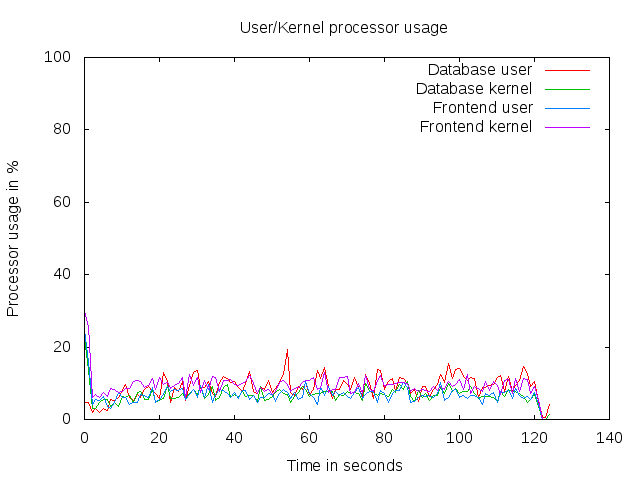 | 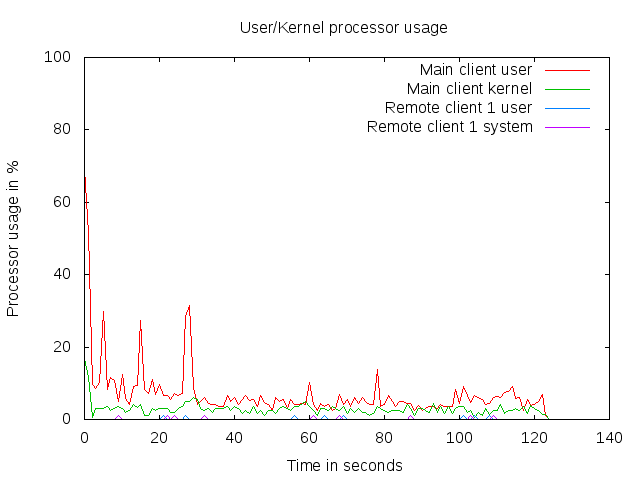 |
| 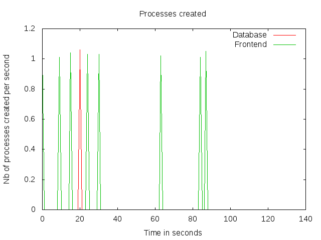 | 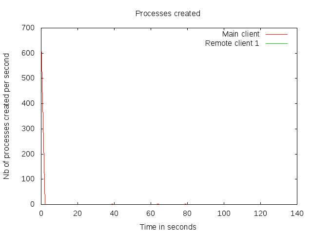 |
| 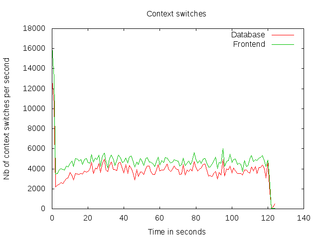 | 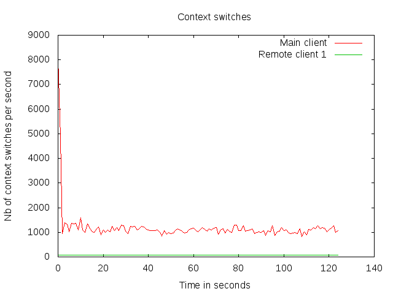 |
| 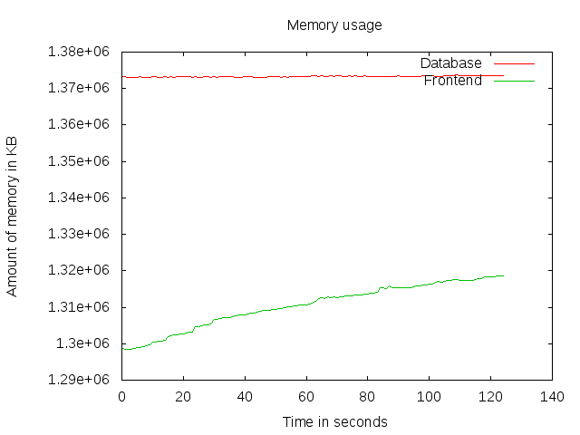 | 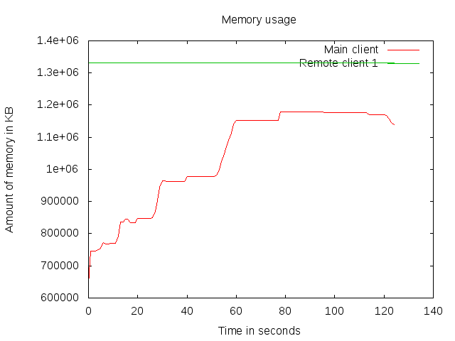 |
| 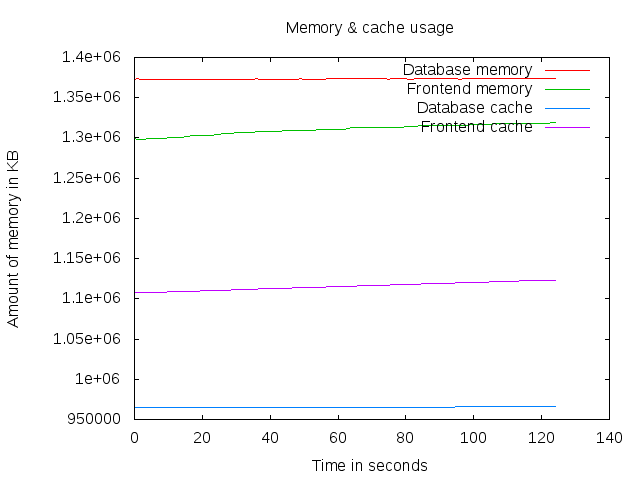 | 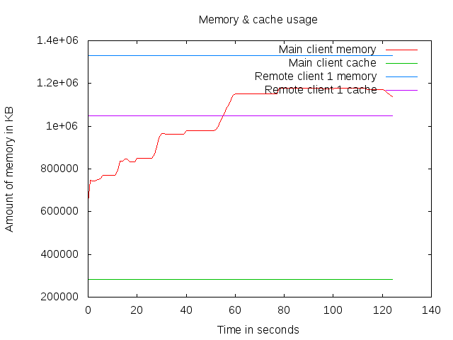 |
| 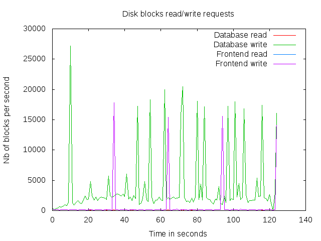 | 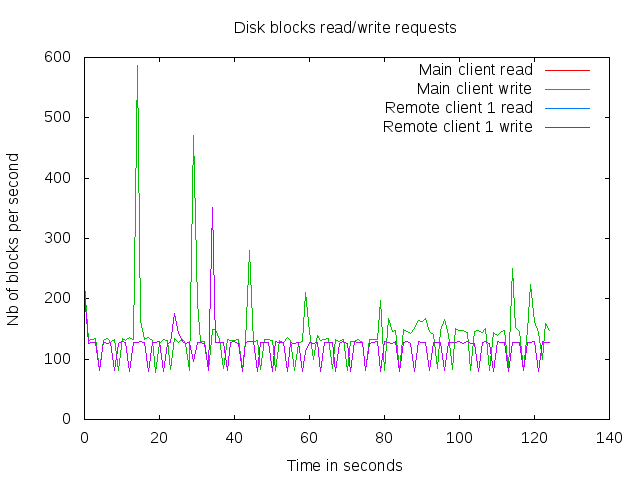 |
| 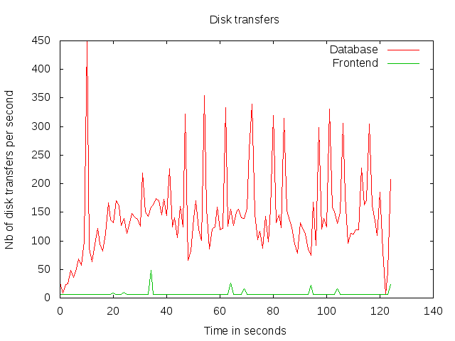 | 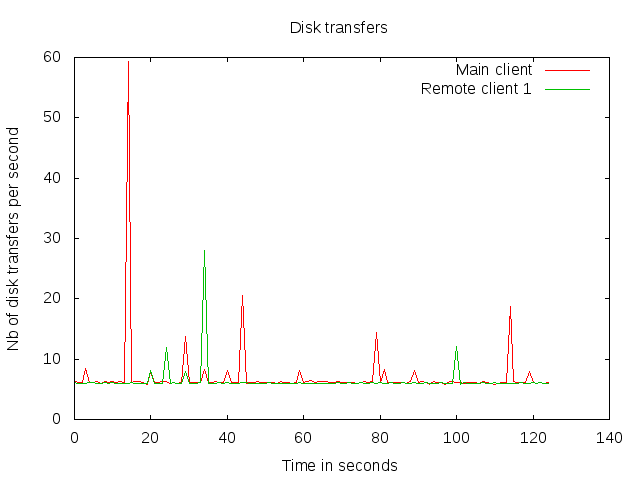 |
| 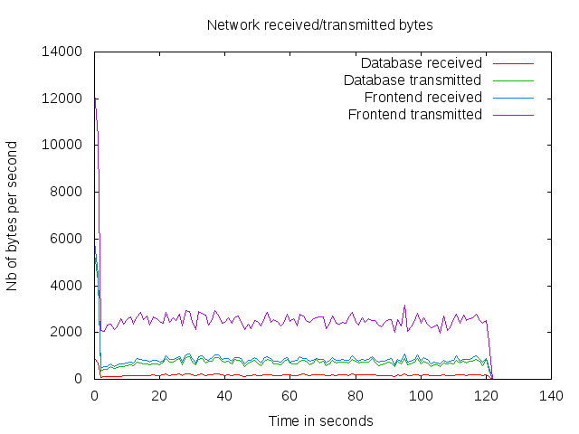 | 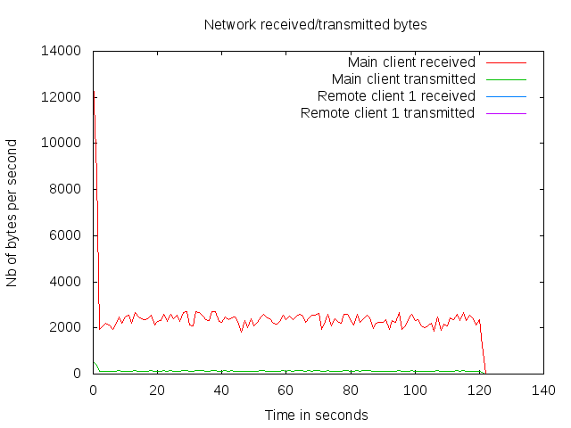 |
| 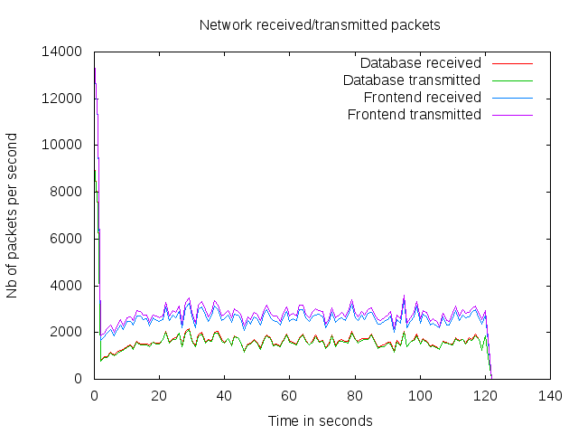 | 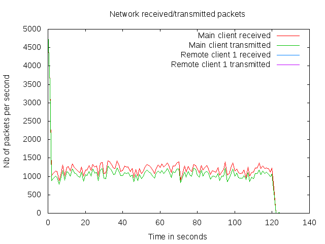 |
| 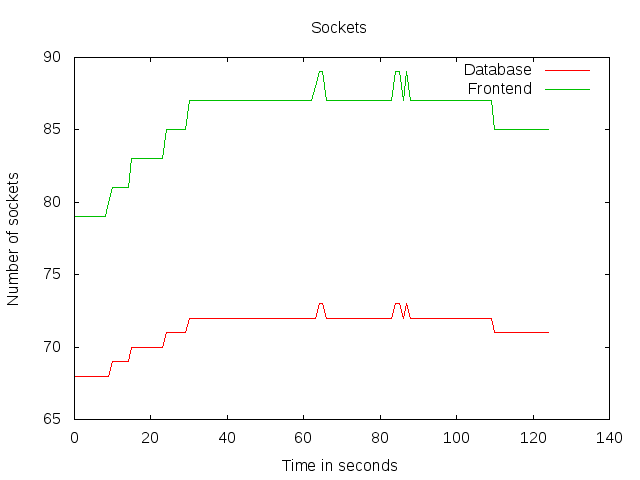 | 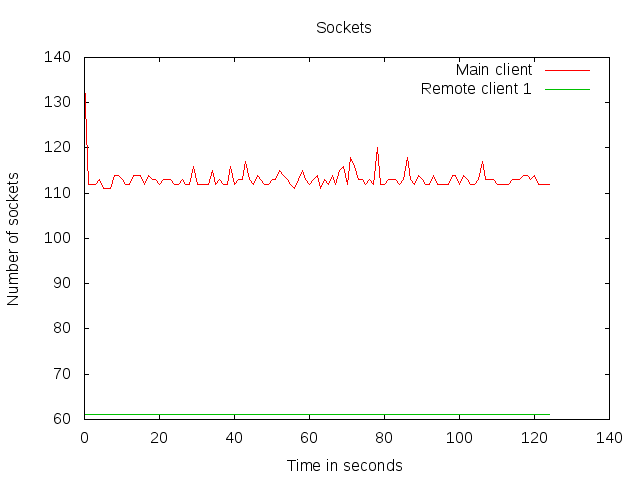 |